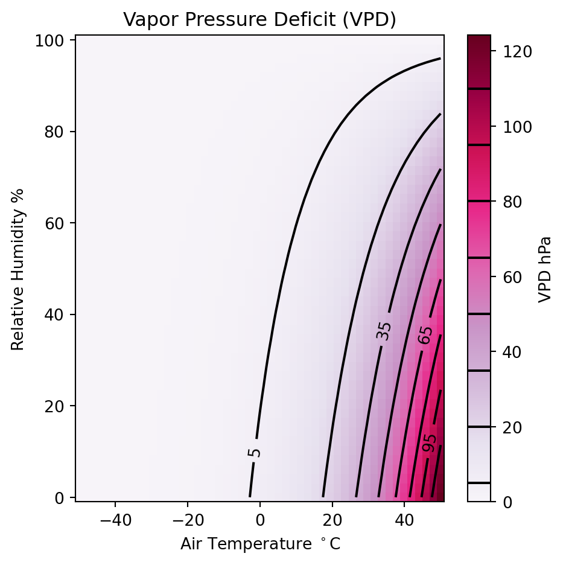

A Framework for Applying Neural Networks to Eddy Covariance Data
Introduction
EC data is poorly suited for traditional statistical methods @wegman_computational_1988
Site specific approaches are often needed for EC data
But from these site specific functional relationships, we hope to glean “universal” truths.
We need to ensure our results are reasonable given our understanding of system.
And if they don’t, we need to be able to see “why”
As the period of record at sites extend (e.g, decades) the task only becomes more complex
A sliver lining - computational statistics are ideally suited for voluminous data sets!
Machine Learning
We provide examples to demonstrate how NN models can be used for inferential modelling
detecting and mapping functional relationships pattern recognition and feature detection demonstrate how they can be used to map response functions, show their ability to inferential modelling Gap-filling
gap filling of EC data and for understanding the
They offer the user more control over the structure of the model and inspection of the model derivatives provides a method for validating that the relationships mapped by a model are physically plausible.
Site specific approaches are often needed work with EC data, but from these {site specific} functional relationships, we hope to glean {universal} truths.
We need to ensure that the results conform to our values reasonably expected {given our understanding of system/the framework of our conceptual model}. And if they don’t, we need to be able to see “why” in order to ensure …
Calculating and Visualizing VPD
The Vapor Pressure Deficit (VPD) decreases exponentially as a function of air temperature (Ta) and linearly as a function of relative humidity (RH). We can calculate VPD (kPa) from Ta in (\(\circ\) C) and RH (%) as follows:
import numpy as npfrom Scripts import MiscFuncs,PlotHelpersimport matplotlib.pyplot as pltunits = {'Ta':'$T_a^\circ$C','RH':'RH %','VPD':'VPD hPa' }labels = {'Ta':'Air Temperature','RH':'Relative Humidity','VPD':'Vapor Pressure Deficit' }range_TA_RH,grid_TA,grid_RH,grid_VPD = MiscFuncs.Create_Grid( np.linspace(-50,50),# Define a TA range (in C) np.linspace(0,100), # Possible RH values MiscFuncs.Calc_VPD # Return Vapor Pressure Defecit )bins = np.arange(5,grid_VPD.max(),15)cmap ='bwr'norm = [0,grid_VPD.max()]fig,ax=plt.subplots(1,figsize=(5,5))PlotHelpers.Contour_Plot(fig,ax,grid_TA,grid_RH,grid_VPD,cmap=cmap,norm=norm,unit = units['VPD'],bins=bins)ax.set_xlabel('Air Temperature $^\circ$C')ax.set_ylabel('Relative Humidity %')ax.set_title('Vapor Pressure Deficit (VPD)')plt.tight_layout()

This plot shows the relationship between VPD, TA, and RH over a range of possible values
Partial Derivatives
Code
import pandas as pdimport tensorflow as tf# Use tensorfolow to calculate the first partial derivative of the functionX_tensor = tf.convert_to_tensor(range_TA_RH.T)with tf.GradientTape(persistent=True) as tape: tape.watch(X_tensor) VPD_est = MiscFuncs.Calc_VPD(X_tensor) # Get gradients of VPD_est with respect to X_tensorDeriv = tape.gradient(VPD_est,X_tensor).numpy()Derivatives = pd.DataFrame( data={'TA':range_TA_RH.T[:,0],'RH':range_TA_RH.T[:,1],'dVPD/dTA':Deriv[:,0],'dVPD/dRH':Deriv[:,1] })fig,axes=plt.subplots(2,2,figsize=(8,8),sharey='row')df,x,y = MiscFuncs.byInterval(Derivatives,'TA','dVPD/dTA',bins=100)ax = PlotHelpers.CI_Plot(axes[0,0],df,y)ax.set_title('Partial First Derivative\nVPD with respect to Ta')df,x,y = MiscFuncs.byInterval(Derivatives,'RH','dVPD/dRH',bins=100)ax = PlotHelpers.CI_Plot(axes[0,1],df,y)ax.set_title('Partial First Derivative\nVPD with respect to RH')grid_dVPD_dTA = Deriv[:,0].T.reshape(grid_TA.shape)grid_dVPD_dRH = Deriv[:,1].T.reshape(grid_RH.shape)d_bins = np.arange( np.floor(Deriv).min(),np.ceil(Deriv).max(),.5 )d_norm = [ Deriv.min(), Deriv.max() ]ax=axes[1,0]PlotHelpers.Contour_Plot(fig,ax,grid_TA,grid_RH,grid_dVPD_dTA,cmap = cmap,norm=d_norm,bins=d_bins)ax.set_title('dVPD dTa')ax=axes[1,1]PlotHelpers.Contour_Plot(fig,ax,grid_TA,grid_RH,grid_dVPD_dRH,cmap = cmap,norm=d_norm,bins=d_bins)ax.set_title('dVPD dRH')plt.tight_layout()
This plot shows the partial first derivatives of VPD